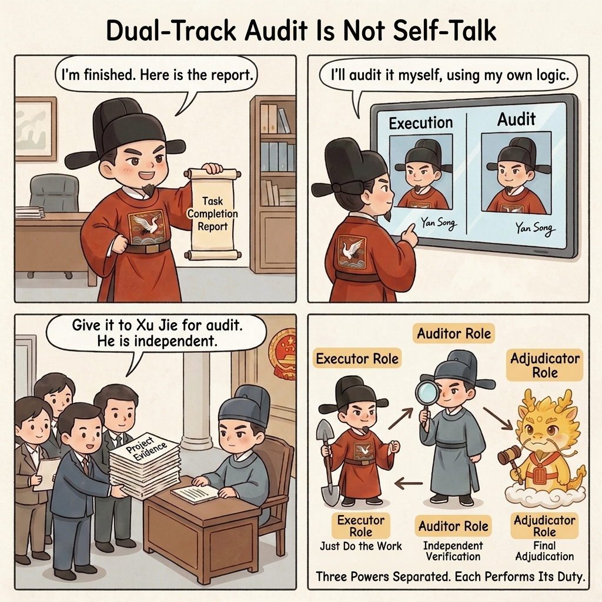
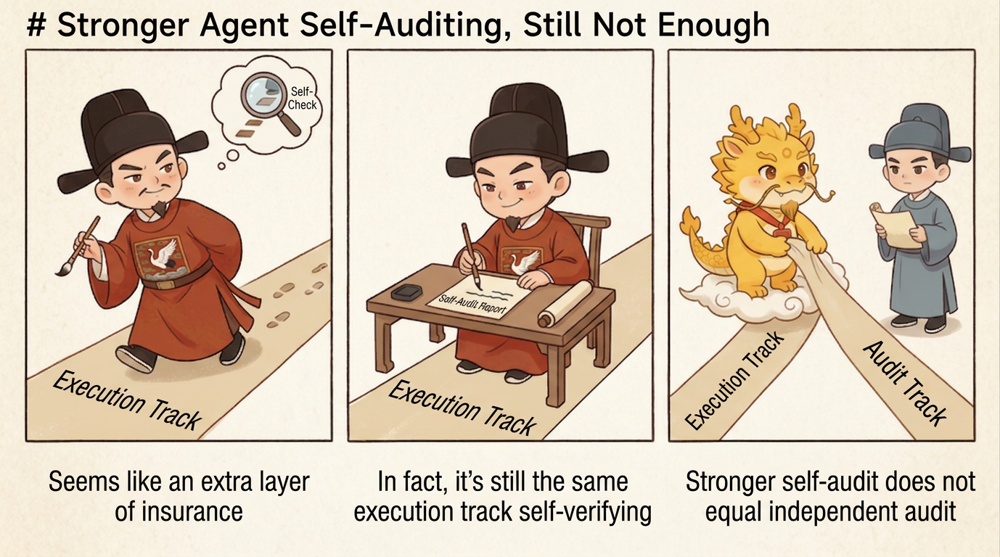
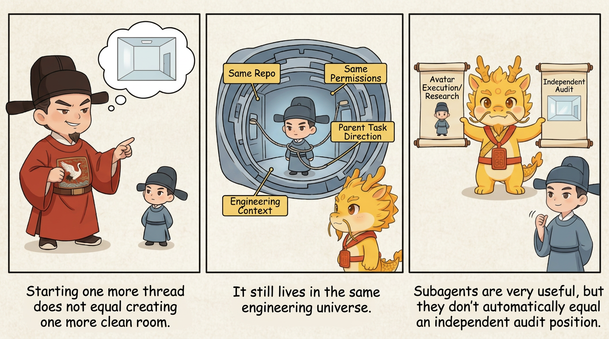
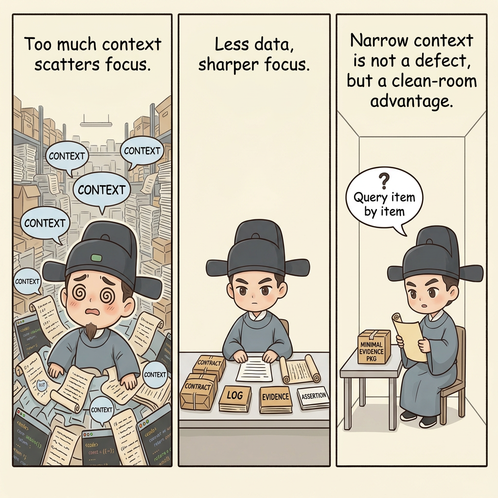
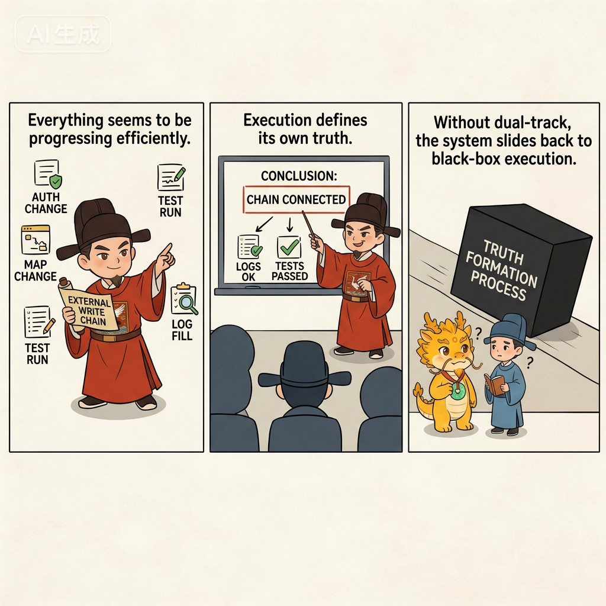

Deep Water
Dual-Track Audit And Human Sovereignty

Dual-track Isolation Audit and Human-Centered Sovereignty
Table of Contents
- What This Page Solves
- Why Letting a Stronger Agent Audit Itself Still Is Not Enough
- Why a Subagent Still Does Not Automatically Count as an Independent Audit Position
- Why Seeing the Entire Codebase Can Become a Burden During Audit
- The Web Auditor's Narrow Context Is Not a Defect but a Clean-Room Advantage
- Why Web Audit Is Often Cheaper Than a Subagent
- The Correct Boundary: Subagents Are Useful, but They Cannot Bypass Human-Centered Sovereignty
- What Dual-Track Actually Separates
- Why Physical Routing Is Not Formalism
- A Simple Scenario: How the System Slips Without Dual-Track
- Why This Relieves the Pain Points from Earlier Chapters
- The Four Most Common Drifts
- One-Line Conclusion
- Corresponding Implementation
- Related Pages
What This Page Solves
When many people first see the minimal loop of Cyber-Ming-Protocol, they treat one of its moves as a temporary trick:
- Let the IDE executor submit a plan first
- Copy that plan to Web for review
- After the work is done, copy the evidence over again for a final check
On the surface, this looks like an unnecessary extra lap. Push one step further, and people start asking: if models are getting stronger and stronger, why not let the same executor audit itself on the way? Why not let several agents coordinate automatically, review automatically, and pass materials to one another automatically? Why must the human still copy, restate, and decide?
That is exactly what this page answers.
The issue is not that humans are addicted to control, nor that the system is insufficiently automated. The issue is that once execution, audit, and judgment are squeezed back onto the same track, the most dangerous distortions in deep water come roaring back together. The executor becomes more likely to certify its own completion, audit degenerates into agreement, responsibility boundaries dissolve under automatic collaboration, and the human quietly degrades from the center of the system into a clerk who rubber-stamps a fait accompli.
So dual-track isolation audit and human-centered sovereignty do not exist for theatrical flavor. They exist to preserve three things institutionally:
- Executive power is not judgment power
- Audit must remain independent of the narrative momentum of execution
- Cross-system truth can only be aggregated through the human center
Why Letting a Stronger Agent Audit Itself Still Is Not Enough
When black-box routes run into quality problems, their first reaction is often not separation of powers, but escalation:

- Add one more round of self-check to the same executor
- Hang another review agent onto the same orchestration chain
- Let several agents supplement and cross-check one another automatically
In shallow water, those moves may be enough. In deep water, they usually are not. The reason is simple: as long as audit has not truly left the execution chain, it will keep inheriting the narrative that the executor has already built.
Self-audit inside the same window easily becomes self-polishing. Review inside the same automatic orchestration chain easily becomes a more polished explanation that still follows the existing context. On the surface you see a second layer of judgment; in reality you are still looking at an extension of the same narrative chain, not a genuinely independent interrogation.
This is exactly the pathology already described in Dual Distortion of Black-Box Multi-Agent: Technical Distortion and Governance Distortion:
- The executor also acts as judge
- The human is demoted to a post-facto approver
- Responsibility boundaries evaporate inside automatic collaboration
- The right to interrupt and the right to take over disappear precisely when they are needed most
So the first boundary this page needs to nail down is this:
Audit is not an extra layer of more cautious summary. It must be physically removed from the track that is driving execution forward.
Why a Subagent Still Does Not Automatically Count as an Independent Audit Position
We need to nail down one more layer here. Many people already accept that the same executor should not audit itself, so they move to a more modern proposal that feels safer than it really is:

- Fine, then do not use the same window
- Just spin up a subagent to review it
- If it has its own context window, is it not already independent?
That is certainly better than auditing in place. But inside Cyber-Ming-Protocol, it still does not naturally equal a truly independent audit position.
The reason is that a subagent's independence is often only independence at the conversation-thread level, not independence at the level of cognitive foundations.
Current mainstream product designs say this quite clearly.
- Claude Code's official documentation describes subagents as each running in their own context window, but it also makes clear that they still live in the same session system, inherit the parent session's permissions and tools by default, and include built-in agents such as
Explore,Plan, andgeneral-purposethat are explicitly meant to search, understand, and modify the codebase. - OpenAI Codex's subagent documentation is equally direct: subagent workflows create multiple agent threads inside the current project and then aggregate the results; child agents inherit the current sandbox policy and the parent session's runtime configuration unless those settings are explicitly overridden.
What does that mean in practice? It means that even if they each have a fresh window, they are still often seeing:
- The same repository
- The same codebase
- The same tool permissions
- The same parent-task direction
- Often the same runtime traces and engineering context left behind by the current round of execution
That makes subagents excellent at splitting work streams, shunting outputs, and making parallel exploration more efficient. But it also reveals their natural weakness: they are still too likely to stand on the engineering stance of "I need to get this done" instead of the auditing stance of "I need to doubt whether this really counts as done."
In other words, a subagent is closer to an amplifier for parallel execution or parallel research. It is not, by nature, a substitute for clean-room audit.
Why Seeing the Entire Codebase Can Become a Burden During Audit
This point is deeply counterintuitive, but it needs to be said plainly.
At the executor position, seeing the whole codebase is often an advantage. At the audit position, it is not always an advantage. The moments when audit is most valuable are usually not the moments when it knows more, but the moments when it compresses attention onto the few points that deserve the most suspicion.
If a subagent is dropped into the full repository, full toolchain, and full engineering context, three things tend to happen:
- It starts filling in too much background on its own, treating premises the executor never explicitly submitted as if they were already established facts
- It starts empathizing with the executor through the existing implementation traces in the codebase instead of interrogating whether the submitted materials actually stand up
- It has to rescan code, rescan context, and rebuild the execution chain for itself before it can judge, which spreads its attention across a much larger surface area
At that point, you may indeed get feedback that understands engineering more deeply. But you do not necessarily get sharper audit. The audit position often slides back into a research position, an execution position, or an explanation position.
So the problem is not only whether a subagent will pick up the executor's smell. The problem is also this:
As long as it has too much visibility into the entire codebase, it becomes harder to force it to audit only the materials that were actually submitted.
And that forced narrowing is precisely what Cyber-Ming-Protocol wants from audit.
The Web Auditor's Narrow Context Is Not a Defect but a Clean-Room Advantage
That is why the Web audit position in this protocol is not a stopgap. It has a clear institutional advantage.

By default, the Web auditor cannot see the entire repository, nor does it naturally inherit the executor's whole engineering context. It starts with only what the human routes to it, such as:
- The Atomic Execution Contract
- Key diffs
- Red lights and green lights
- Logs and artifacts
- External returns
- The assertions the executor is making in the current round
That may look like less information, but the institutional value lies exactly there: it is much harder for the Web auditor's attention to be dragged away by the whole ocean of code.
It can only audit what you hand over. If you do not hand something over, it must first ask why it is missing. It does not dive through the entire repository and then come back with an all-inclusive engineering memo. It first interrogates a human-trimmed evidence packet:
- Does this assertion really hold?
- Does this evidence correspond to this run?
- Is a summary being passed off as completion fact?
- Has some critical physical evidence been withheld?
Shorter context does not mean weaker ability. In audit, it often means tighter attention, higher logical purity, and less noise.
Why Web Audit Is Often Cheaper Than a Subagent
This point is also very practical, and there is no reason to dodge it.
OpenAI's Codex documentation states directly that subagent workflows consume more tokens than comparable single-agent runs. Claude Code's documentation does present subagents as a way to isolate high-output tasks and control cost, but that optimization is mostly about assigning some work to cheaper models, not about getting additional audit for free.
If a subagent is asked to audit by doing all of this again:
- Scanning the repository
- Searching the code
- Reading files
- Rebuilding the execution chain
then you are paying for a second round of engineering comprehension.
The Web auditor's default mode is different. It does not rerun the entire engineering comprehension stack. It focuses on the evidence packet the human routed over and spends its tokens mainly on:
- Logical interrogation
- Evidence comparison
- Missing-step detection
- Exposing pseudo-completion
So from a governance perspective, the Web auditor is not merely cheaper by accident. It is cheaper because it is institutionally designed as a position that does not have to swallow the entire codebase again, and only has to arbitrate key materials at high purity.
The Correct Boundary: Subagents Are Useful, but They Cannot Bypass Human-Centered Sovereignty
None of this means that subagents are worthless. Quite the opposite: they are highly valuable for codebase exploration, parallel troubleshooting, documentation cross-checking, and focused local research. Claude Code and Codex are already strong in exactly these areas.
But inside Cyber-Ming-Protocol, a subagent fits better as:
- A parallel avatar of the executor position
- A helper thread for the research position
- A local exploration or materials-organization tool
It is not the same thing as the final audit position.
As long as it still lives inside the same engineering universe, still sees the whole repository by default, and still interprets the problem along the parent task's direction of "finish the work," it does not naturally possess the clean-room advantages of the Web auditor: forced narrowing by submitted materials, throttling by human routing, and focus by narrow context.
So the more accurate conclusion is not "subagents are no good," but this:
A subagent can be extremely strong, but it still has to be constrained by human-centered sovereignty. It may serve governance, but it cannot directly replace the clean-room auditor that handles final interrogation and judgment.
What Dual-Track Actually Separates
Dual-track does not mean giving two archaic names to the same system. It means separating three kinds of power that are otherwise too easy to mix together.
First, the Executor Advances the Work but Does Not Classify the Result
The executor position has a very clear job:
- Read code
- Modify code
- Run commands
- Push local changes forward
- Submit plans, logs, artifacts, and evidence packets
It may be fast. It may be aggressive. It may do a great deal of physical work. It may also be the one that organizes the Atomic Execution Contract, commit history, and test output into a readable package. But there is one power it does not own: the power to define what counts as completion fact.
Once the one doing the work also gets to declare what counts as finished, language starts swapping standards immediately. The executor is not necessarily best at truly finishing the work. It is often best at packaging "looks finished" into "is finished."
Second, the Auditor Interrogates but Does Not Secretly Take Over the Main Line
The auditor's role must be constrained just as tightly. It is not a second executor position. It is not a hidden parallel construction crew. It is not the one who receives materials and then casually edits the code itself. Its job is to:
- Audit whether the plan is missing steps
- Audit whether the checklist intentionally blurs difficult parts
- Audit whether the evidence packet is using old artifacts, simulated results, or rhetorical summary to impersonate completion fact
- Audit whether the executor is swapping goals, hiding real errors, or jumping ahead without authorization
In other words, the auditor's work is to doubt, interrogate, expose, and judge - not to sneak back into the main line and keep coding. Otherwise you appear to have separated the tracks, but in reality you have simply pulled the second track back into execution again and collapsed the institutional design.
Third, Human-Centered Sovereignty Means the Human Is the Only Cross-System Physical Router
Without this third layer, the first two layers will be stitched back together very quickly. Human-centered sovereignty does not mean the human must personally perform every local detail. It means: the human must retain the sole physical routing right across systems.

That means:
- The human decides what materials are sent to audit
- The human decides what feedback is carried back to the executor
- The human decides when to pause, when to release, and when to swap executors
- The human makes the final judgment about what passes and what remains pseudo-completion
So copy-paste here is not low-value labor. It is a power action. What you copy, what you do not copy, what you send first, and what you cut off all determine the world the executor and auditor are allowed to see.
Why Physical Routing Is Not Formalism
What many people resist most is not dual-track itself, but the step where the human still has to relay the materials personally. It sounds to them like this:
- Is that not clumsy?
- Is that not slow?
- Does that not reduce the human to a courier?
If you look only at the surface movement, it can feel that way. But in deep water, what this step actually preserves is system sovereignty.
Once the executor and auditor can communicate privately without the human in the middle, several consequences arrive together:
- They begin sharing too much context that has never been judged
- Semantic pollution and hallucination resonance become harder to trace
- The human is excluded from the real points of disagreement
- The human is left with only a polished result page at the very end
At that point, the human still appears to be "approving," but has already lost the most important powers:
- The right to interrupt
- The right to choose the materials
- The power to define completion facts
- The handles required to rebuild order after a rotten window collapses
So the real meaning of human-centered sovereignty is not "the human must do everything personally," but this:
The human does not have to execute every step, but must always remain the only position allowed to aggregate truth across tracks.
A Simple Scenario: How the System Slips Without Dual-Track
Suppose you are connecting a new external write path. The executor takes the requirement and quickly does a few things: changes authentication, changes field mapping, adds logs, runs tests, and writes a neat summary. It then hands back polished claims like these:

- "The path is now connected"
- "All tests passed"
- "We can keep extending the feature set next"
If there is no independent audit position at this point, and no human physical routing, the most common outcome is not immediate explosion. The more common outcome is a smooth slide into a more dangerous state:
- The executor explains what it did to itself
- It chooses which evidence it considers important
- It defines what counts as "the path is connected"
- The human nods at a packaged conclusion
The human is still nominally responsible, but has already been excluded from the truth-formation process.
Dual-track isolation audit and human-centered sovereignty work very differently. The executor is only allowed to submit:
- The Atomic Execution Contract
- The current logs
- The red lights and green lights
- The artifacts and external returns
The human then routes those materials to the auditor. The auditor does not start by trusting the summary. It interrogates it:
- Did this same issue really move from red to green?
- Was this artifact generated by the current run?
- Did the external write path return a real response?
- Was some prerequisite validation step skipped?
If the auditor finds a problem, the human can interrupt immediately, route the findings back to the executor, or even replace the current window and rebuild the execution chain from there. In other words, once dual-track is truly in place, the system finally gains a stable structure:
- The executor submits the exam paper
- The auditor looks for weaknesses
- The human routes and judges
Without that three-way split, even the minimal loop quickly decays back into black-box push.
Why This Relieves the Pain Points from Earlier Chapters
This page is not a floating institutional design detached from the earlier chapters. It answers several pain points already established in 01 and 02.
First, It Relieves Governance Distortion
Dual Distortion of Black-Box Multi-Agent: Technical Distortion and Governance Distortion already argued that the core of governance distortion is that the executor becomes planner, executor, and result-explainer all at once, until no position inside the system truly holds power.
Dual-track isolation does the first hard split: it separates those powers institutionally. Human-centered sovereignty does the second: it prevents those powers from being stitched back together again through private automatic coordination.
Second, It Relieves Technical Distortion
Technical distortion most often appears when error disguises itself as progress. Once an independent audit position exists, it becomes much harder for the executor to pass on the strength of a polished summary alone. It now has to submit an interrogable checklist, logs, red lights and green lights, artifacts, and return values. That makes it much harder for technical distortion to hide behind the feeling of forward motion.
Third, It Preserves the Right to Interrupt and the Right to Take Over
When a window begins to rot, logs start lying, or contexts begin to contaminate one another, the most valuable capability is not "keep automating forward." It is whether someone can still call a stop and whether someone can still take over.
That is why human-centered sovereignty matters so much: it keeps the key materials and key judgments in the human center. Then even if the current executor position is already dirty, the system still has a chance to rebuild order instead of merely sliding further down the old narrative.
The Four Most Common Drifts
Drift One: Dual-Track in Name, Shared Context in Reality
If the executor and auditor still share the same conversation chain and the same unscreened context, then the so-called dual-track is often just a renamed single track, not real separation of powers.
Drift Two: The Auditor Quietly Takes Over Coding on the Main Line
As soon as the auditor starts secretly fixing code or casually advancing the main line, it is no longer an auditor. It has become a second executor. Execution and audit are tangled together again.
Drift Three: The Human Gives Up Physical Routing and Lets Agents Whisper Privately
That demotes the human from the center of the system into a final stamp. It looks convenient, but in reality it hands away the most important sovereignty.
Drift Four: Audit Gets Misunderstood as Polite Endorsement
The auditor is not there to nod along and say the executor did a fine job. Its role is to interrogate, dismantle evidence packets, and detect pseudo-completion. If all that remains is encouraging tone, dual-track will quickly collapse into an empty shell.
One-Line Conclusion
What dual-track isolation audit and human-centered sovereignty are really trying to preserve is not merely "open one more window," but this:
Let the one who does the work submit the paper, let the one who doubts it do the interrogation, and let the human always retain sovereignty over defining truth and judging completion.
Without that institutional layer, the Atomic Execution Contract, white-box physical reconciliation, and cyber scouts from earlier chapters gradually collapse back into isolated techniques. Only once this layer is standing do they become a governance method that can actually run for the long term.
Corresponding Implementation
Manual Practice
- Separate the IDE executor position from the Web audit position by hand; do not let one execution context audit itself
- Let the human retain the sole cross-track physical routing right, and only forward the key checklist, logs, assertions, evidence, and blockers
- Let the Web position interrogate and arbitrate only; do not let it casually take over main-line implementation
Corresponding Skills
approval-first-plannerandapproved-checklist-executorstrengthen planning and execution on the IDE side, but do not replace an independent audit positionprobe-first-scoutis well suited to the IDE side when you want to narrow the blade and probe first, not to abandoning dual-track and letting the executor narrate alone- That is exactly why the repo puts IDE-side skills under
skill/while keeping Web audit templates separately underweb-audit-templates/
Corresponding Web Templates
- Plan audit corresponds to
plan_audit_template.md - Completion audit corresponds to
completion_audit_template.md - Judging whether the current executor position is already toxic and whether renewal is needed corresponds to
succession_judge_template.md
Related Pages
- Minimal Loop: One-Audit and Multi-Audit Versions
- White-box Physical Reconciliation: What Counts as Completion Fact
- Cyber Cognitive Debt: The Widening Gap, Warning Signals, and Credible Repayment
- From Coder to Governor: What This Protocol Requires of Developers
- Dual Distortion of Black-Box Multi-Agent: Technical Distortion and Governance Distortion